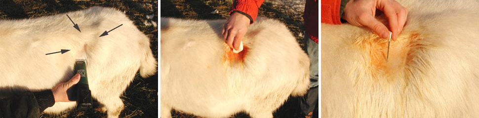

I've received inquiries from concerned livestock owners who believed their ovines or kids were experiencing bloating, although in reality, their animals were perfectly healthy. However, it's crucial to be aware that untreated bloat can be fatal. Throughout my many years of raising ovines, I've encountered only a few cases of bloat, all of which were successfully resolved through the use of oil and massage.
Is Your Ovine Overweight?
Determining whether your ovine is overweight can be tricky. Ovines may appear fat to us, but this is often a sign of good overall health and condition rather than obesity. When assessing your ovine, pay attention to its belly and the width from side to side. A pronounced bulge in these areas is not indicative of fat but rather a well-developed rumen, a crucial component of their digestive system responsible for fermentation. A larger rumen means more efficient food processing, which is advantageous for their health.
Understanding Bloat
A ovine's rumen serves as a significant fermentation chamber, producing carbon dioxide and methane gases as byproducts. These gases are typically expelled through burping and passing gas. It's essential for ovines to release these gases regularly. When they cannot expel the gas, pressure builds up, leading to bloating. Bloat is characterized by a distended left side of the ovine, which can even impair their breathing.
Identifying Bloat
To determine if your ovine is experiencing bloat, observe it head-on. In cases of bloat, the left side will be noticeably wider than the right. If both sides appear symmetrical, and the ovine displays no signs of distress, it's likely not experiencing bloat. Keep in mind that ovines vary in body shape, and some may naturally be wider than others. Individual differences are common.
When It's Not Bloat
If your ovine is wide but displays even side proportions and has maintained this physique for an extended period, such as weeks or months, it's not experiencing bloat but rather enjoying "good condition." This indicates a well-developed rumen, which is a positive sign for their digestive health.
Causes of Bloat
Several factors can contribute to bloat in ovines:
1- Overeating
2- Consuming gas-producing foods rapidly
3- Sudden dietary changes or excessive intake of new foods
4- Certain weeds, like Milkweeds, can disrupt rumen balance and lead to bloat.
5- Consumption of uncured or moldy hay
6- Feeding milk replacers instead of real ovine milk in kids
7- Oesophagus obstruction
8- Face paralysis, as seen in Tetanus
Signs of Bloat
Recognizing the signs of bloat includes:
Obvious abdominal distension, particularly on the left side
Signs of discomfort such as restlessness, kicking, or teeth grinding
Depressive behavior
Severe cases may involve difficulty breathing.
Prevention
To prevent bloat, consider these measures:
Provide baking soda (sodium bicarbonate) for ovines to regulate their rumens and maintain pH balance.
Gradually introduce dietary changes, especially when incorporating grains.
Limit grazing time on lush, rapidly growing pastures, or administer oil before pasture access.
Avoid releasing hungry ovines onto rich pastures; offer hay first.
The arrows serve as indicators for the left flank region. The upper arrow points towards the short ribs or transverse processes, while the left arrow signifies the final rib, and the right arrow directs attention to the hip bone.
It is essential to clip this specific area, particularly focusing on the area with the most significant bulge associated with the rumen. After clipping, thoroughly clean the clipped area using 4 x 4 gauze pads soaked in a mixture of betadine and alcohol. Start by using a betadine-soaked 4 x 4, followed by scrubbing the area with an alcohol-soaked gauze pad. Repeat this process of betadine and alcohol scrubs at least three times, using fresh 4 x 4s for each application.
Once the area is properly sanitized, insert a 14-gauge, 2" needle into the center of the clipped region, where the largest bulge of the rumen is visible. This step allows the release of air, relieving a substantial portion of the rumen pressure. It is crucial to note that this procedure should be reserved for the most severe cases of bloat.